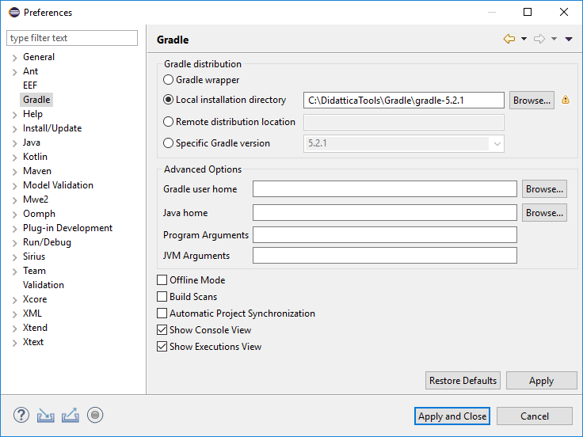
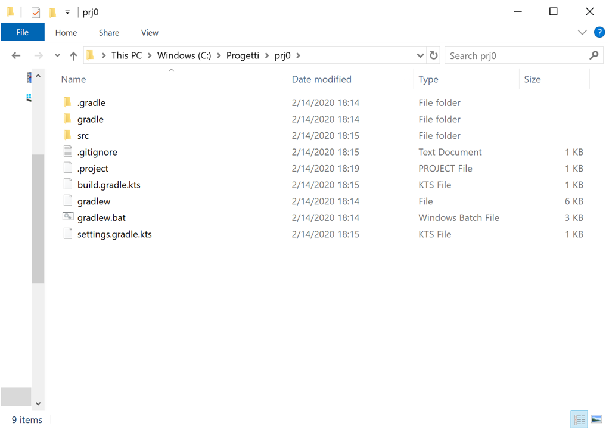
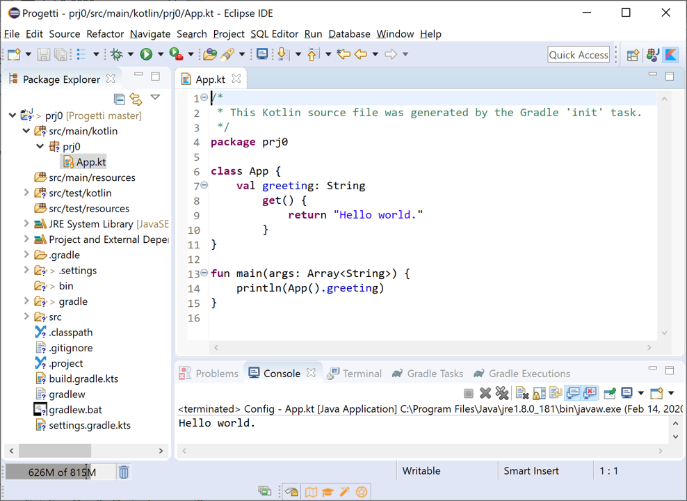
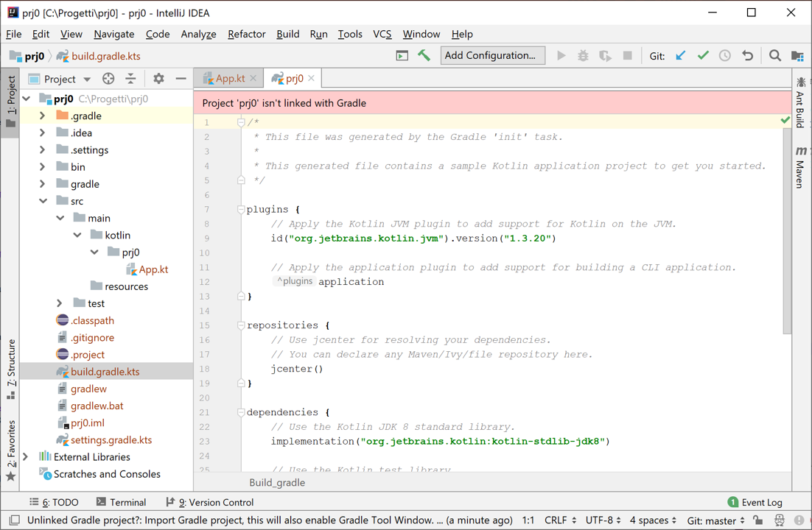

GIT : clone the iss2020Lab
- Open a new, empty directory and work in it.
- Execute git clone https://github.com/anatali/iss2020Lab.git
- Execute git remote -v
- Use the files as a read-only reference: never change them
- Execute git pull when needed
Using Gradle and Eclipse
- Download gradle
- Download Eclipse - DSL
- Open Eclipse and set gradle to your local version

- Add plugin for Kotlin
- Add a Terminal
- Copy into the directory dropins:
- it.unibo.issLabStart\resources\plugins\it.unibo.Qactork_x.y.z.jar
- it.unibo.issLabStart\resources\plugins\it.unibo.Qactork.ide_x.y.z.jar
- it.unibo.Qactork.ui_x.y.z.jar
- restart Eclipse
Start a new Kotlin project
- Open a new, empty directory (e.g. iss2020)and work in it.
- gradle init -dsl kotlin , select 8 and give a name to the project (e.g. select the proposed default prj0)

- In Eclipse: Import -> Gradle -> Existing Gradle Project -> ... prj0

Note the files .classpath and .project.
The file build.gradle.kts has no proper editor, but can be used. For example,
we can execute the application by writing (on a terminal) gradle run.
To execute the application you ca also: i) put the mouse on App.kt ii) select RunAS Kotlin Application
- Click the mouse-rigth on the current working folder (prj0) and select
Open folder as IntelliJ IDEA Community Edition Project.

The file build.gradle.kts is now editable.
To run the application by selecting (as in Eclipse) the file App.kt you must select
Tools -> kotlin -> Configure Kotlin in project. This action adds a lib directory in the project.
Start a new Spring Boot project
See
https://spring.io/quickstart. Select
GradleProject, Java and Spring Web.
Projects created by
start.spring.io contain
Spring Boot,
a framework that makes Spring ready to work inside your app,
but without much code or configuration required.
Spring Boot is the quickest and most popular way to start Spring projects.
Open the project with
IntelliJ (wait for the downloading of
Gradle and for the first build).
To run execute:
gradle bootRun
and then open your browser and eneter
http://localhost:8080/hello.
In alternative:
- Include in build.gradle the bootJar configuration closure:
bootJar {
mainClassName = 'com.example.demo.DemoApplication'
}
- build the executable jar: gradle bootJar. The executable jar will be located in the build/libs directory.
- execute the command: java -jar build/libs/demo-0.0.1-SNAPSHOT.jar
To make the project available in Eclipse:
- In build.gradle, add
plugins {
...
id 'eclipse' //ADDED
}
- Execute gradle eclipse to generate the files .classpath and .project.
- Import the project in a Eclipse workspace and work as usual.